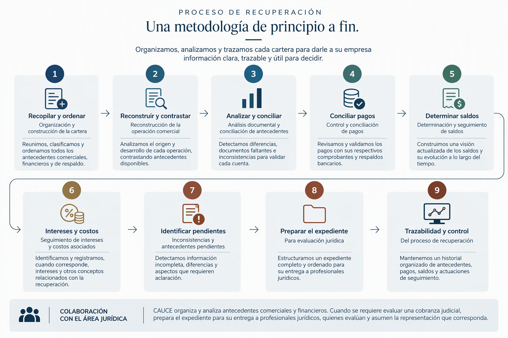

BKO / GESTIÓN EMPRESARIAL
CAUCE GESTIÓN INTEGRAL
Gestión, control y trazabilidad de carteras de crédito, procesos de recuperación y cobranza en general.
SOLICITAR ASESORÍA A CAUCECONTROL Y VISIÓN DE CONJUNTO
De los antecedentes a una cartera trazable.
Creado por Luis Miranda Chavarría, ingeniero civil, CAUCE Gestión Integral es una solución especializada en la organización, análisis, control y seguimiento de carteras de crédito y procesos de cobranza, orientada a transformar antecedentes comerciales y financieros dispersos en información estructurada, trazable y útil para la gestión de recuperación.
SERVICIOS
Gestión con respaldo documental.
- Organización y análisis de carteras de crédito
- Reconstrucción de operaciones comerciales
- Conciliación de pagos y determinación de saldos
- Seguimiento documental de recuperación
- Preparación de expedientes para evaluación jurídica
BENEFICIOS PARA EMPRESAS
Información para decidir.
- Información comercial y financiera estructurada
- Visión del origen y evolución de las cuentas por cobrar
- Pagos y saldos respaldados documentalmente
- Identificación de inconsistencias y antecedentes pendientes
- Expedientes organizados para colaborar con el área jurídica
Organizamos, analizamos y trazamos cada cartera desde el origen de la operación comercial hasta las distintas etapas de su recuperación, proporcionando al cliente información estructurada para conocer y controlar la evolución de sus cuentas por cobrar.
PROCESO DE RECUPERACIÓN
Una metodología de principio a fin.

METODOLOGÍA EN DETALLE
El recorrido de cada cartera.
01Organización y construcción de la cartera
El proceso parte de la recopilación, clasificación y ordenamiento de los antecedentes relacionados con la operación comercial y la deuda.
Los expedientes analizados incorporan facturas y sus XML, notas de crédito, guías de despacho, estados de pago, cotizaciones, antecedentes de aceptación o reclamación de facturas, comprobantes y respaldos bancarios, correos y antecedentes del deudor.
Esta organización permite construir una cartera con un elevado nivel de detalle, manteniendo diferenciados los documentos relevantes y conservando, cuando corresponde, antecedentes históricos, versiones anteriores y documentación interna del expediente.
02Reconstrucción de la operación comercial
CAUCE estructura cronológicamente los hechos y documentos que componen cada caso.
En los expedientes se reconstruyen sucesivamente cotizaciones, prestación de servicios, despachos, estados de pago, emisión y reclamación de facturas, notas de crédito, pagos, compromisos y comunicaciones posteriores.
Esta reconstrucción permite comprender no solamente cuánto se adeuda, sino también el origen y evolución de la operación que sustenta la cuenta por cobrar.
03Análisis documental y conciliación de antecedentes
La metodología contempla el contraste entre diferentes fuentes documentales, identificando coincidencias y diferencias entre facturas, estados de pago, notas de crédito, comprobantes bancarios, registros y antecedentes previamente elaborados.
04Control y conciliación de pagos
Otro componente relevante es la identificación y conciliación de los pagos efectuados por el deudor.
En los antecedentes analizados se individualizan pagos por fecha, importe, cuenta receptora, concepto o glosa, respaldo disponible y aplicación dentro de la cartera.
Este proceso permite diferenciar los pagos asociados a documentos determinados de aquellos cuya aplicación requiere otro tratamiento o antecedentes adicionales, contribuyendo a construir un estado de deuda respaldado documentalmente.
05Determinación y seguimiento de saldos
A partir de la información organizada, se preparan estados detallados de deuda que permiten visualizar individualmente las operaciones que forman parte de la cartera.
El nivel de análisis distingue, entre otros elementos, folio, emisión y recepción de las facturas, inicio de mora, importe, pagos, saldo, días e intereses.
También separa documentos vigentes de facturas reclamadas o anuladas y pagos que deben descontarse del total analizado.
06Seguimiento de intereses y costos asociados a la recuperación
Cuando corresponde, el análisis incorpora el cálculo y documentación de intereses asociados a los saldos.
Los intereses se calculan utilizando las tasas correspondientes, dejando documentados la norma considerada, la tasa, la fórmula, el inicio de la mora, los pagos y el método de verificación empleado.
Los intereses se calculan diariamente y, de manera independiente, por tramos de vigencia de cada tasa.
Los criterios de cálculo son configurables y están sujetos a revisión profesional.
07Identificación de inconsistencias y antecedentes pendientes
CAUCE no se limita a registrar la información disponible. La metodología documentada también identifica expresamente diferencias, inconsistencias y antecedentes que no se encuentran disponibles en el expediente.
El informe de traspaso examinado contiene una sección específica dedicada a información que no estaba disponible en la carpeta, incluyendo determinados respaldos bancarios, antecedentes sobre la correspondencia entre estados de pago y facturación, documentación contractual e informes técnicos.
Este enfoque permite distinguir claramente entre los antecedentes efectivamente disponibles y aquellos que requieren ser complementados o aclarados.
08Preparación de expedientes para profesionales jurídicos
Cuando un proceso requiere ser evaluado en una instancia jurídica, CAUCE desarrolla la preparación y organización de los antecedentes para su traspaso mediante Informes de traspaso a cobranza judicial.
Estos informes reúnen:
- Síntesis del caso.
- Cronología.
- Deuda.
- Pagos.
- Documentos de respaldo.
- Hechos que constan en los documentos.
- Antecedentes del deudor.
- Vencimientos.
- Información no disponible.
- Contenido organizado del expediente.
A su vez, se formaliza la entrega de antecedentes a nuestros clientes y al área legal mediante una estructura documental dividida en informe, facturas, notas de crédito, guías de despacho, antecedentes de cesión, aceptación o reclamación, pagos, estados de pago y cotizaciones, correos, antecedentes y documentación de terceros.
09Trazabilidad y control del proceso de recuperación
La integración de estos procesos permite mantener una cartera estructurada en la que los antecedentes económicos, comerciales y documentales pueden analizarse conjuntamente, ofreciendo una visión detallada del origen de la deuda, los documentos relacionados, los pagos identificados, el saldo determinado y las cuestiones pendientes.
CAUCE Gestión Integral convierte así información comercial y financiera dispersa en una cartera organizada, documentada y trazable, facilitando al cliente el seguimiento de sus procesos de cobranza y preparando los antecedentes necesarios para las distintas etapas de recuperación, incluida su eventual entrega a profesionales jurídicos.
CONTACTO / CAUCE
Conversemos sobre tu cartera.
Solicita asesoría sin adjuntar documentos ni antecedentes sensibles en este primer contacto.